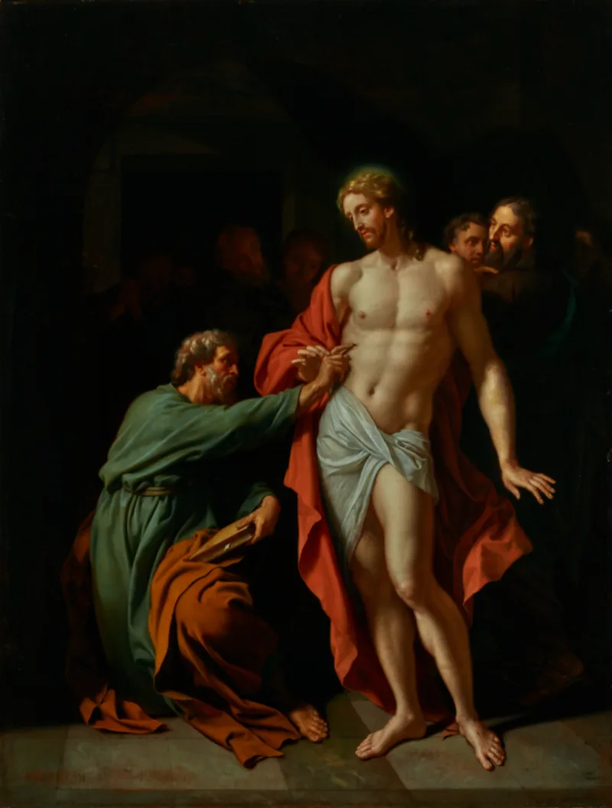
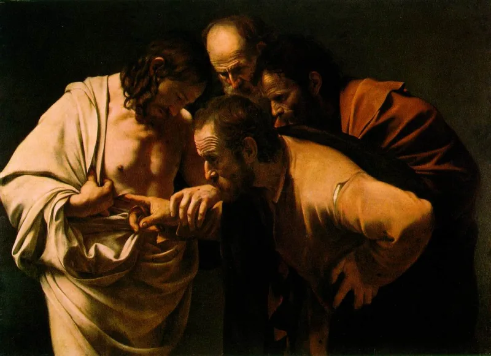

Serious philosophers argue this both ways. Say so before your friend does.
Grief visions are real and common. About half of surviving spouses report sensing the dead.
So the skeptical package deserves respect. A grief vision for Peter.
Guilt resolving itself for Paul. And for the group, what Festinger called cognitive dissonance, where a belief hardens after it is threatened.
Grief visions are private, occasional, and known by the person to be visions. They do not usually produce the claim that a man is bodily alive now.
N. T.
Wright makes the point well. In Judaism, resurrection was an event at the end of history, for everyone at once.
Not something that happened to one man in the middle of it.
Group experiences: the Twelve, and "more than five hundred at once," whom Paul says could still be asked. Hallucinations are private by clinical nature.
Paul was not grieving. He was hunting Christians down (Acts 9:1-9).
James did not believe in his brother (Mark 3:21; John 7:5), then led the Jerusalem church and died for it, which Josephus records. And nobody produced a body.
The disciplined version needs far less than Christians attack. Ehrman, Richard Carrier and the popular case-maker Paulogia use a minimal-witnesses model.
Perhaps only Peter and Paul had visions. The only first-person account we have is Paul's, and it reads like one.
The group appearances reach us as a single creed line, or as Gospels written decades later by non-witnesses. The five hundred are backed up nowhere else.
No text actually narrates James seeing anything. And shared religious ecstasy in expectant groups is well documented, from the Toronto Blessing to Marian apparitions.
Contested, honestly. The clever version is much harder to beat than the strawman about five hundred people sharing one hallucination.
So argue the whole set at once. The enemy, the brother, the tomb, and a bodily claim that Judaism had no slot for.
Michael Licona's book works that ground. Never argue a single thread.
"Grief visions are real, I grant that. But Paul wasn't grieving.
He was on the other side."


The careful version needs only one or two visions, plus forty years of telling.
The disciplined skeptical version needs far less than Christians attack. Ehrman, Richard Carrier, and Paulogia's 'minimal witnesses' model all use it. Perhaps only Peter and Paul had visions.
The only first-hand account we have is Paul's, and it reads like one. The group sightings reach us as a single line in a creed, or as Gospels written decades later by people who were not there. The five hundred are backed up nowhere else. No text tells us that James saw anything; that is an inference.
Shared religious ecstasy in groups that expect it is well attested, from the Toronto Blessing to Marian apparitions. And movements often survive a failed prediction with stronger faith. The theory needs no mass visions. It needs one or two, plus forty years of telling.
Contested — argue the whole set at once, never one thread on its own.
Contested, graded honestly. The clever skeptical model is a few visions plus decades of retelling. That is much harder to beat than the strawman about five hundred people sharing one vision. Steelman it first, always.
The Christian case is strongest on the whole set at once. Paul the enemy. James the brother. The empty tomb. And a claim of a bodily rising, straight away, in a Jewish setting that had no slot for it. Michael Licona's historical work presses that set. Argue the set, never a single thread.